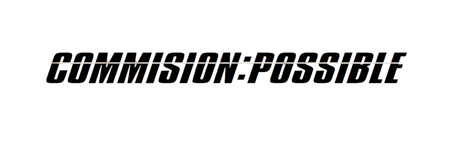
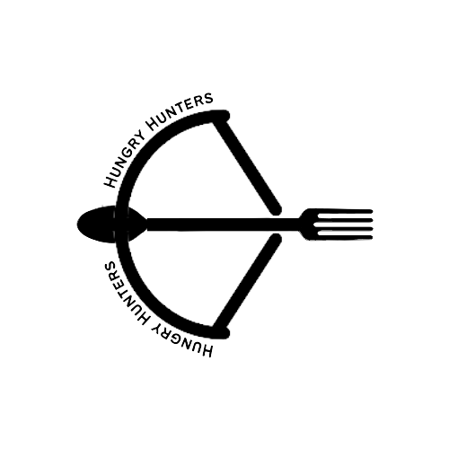

Commission: Possible merupakan sebuah perusahaan kuliner baru yang berdasar pada konsep komisi yang didirikan oleh 3 anak muda pada bulan Agustus 2022.
Commission: Possible terbentuk dari keinginan founders untuk berinovasi dalam bidang kuliner dengan menggunakan bahan-bahan premium terbaik, sehingga menciptakan cita rasa produk yang dapat merangkul selera semua kalangan masyarakat, khususnya anak muda.

Brand pertama ciptaan perusahaan adalah "Hungry Hunters", yang menyajikan berbagai variasi makanan ringan dengan paduan inovasi anak muda.